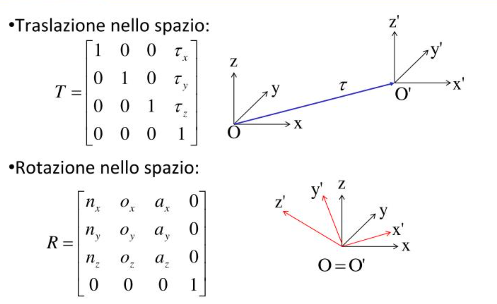

1. Rappresentazione di Oggetti 3D e Trasformazioni
Coordinate Omogenee:
Per rappresentare punti nello spazio proiettivo usiamo le coordinate omogenee. Questo ci permette di rappresentare traslazioni, rotazioni e proiezioni prospettiche tramite moltiplicazioni di matrici.

- Un punto 3D Euclideo (x, y, z) diventa (x, y, z, 1) in coordinate omogenee.
- (x, y, z, w) è equivalente a (kx, ky, kz, kw) per qualsiasi k ≠ 0.
- Conversione in coordinate Euclidee: (x, y, z, w) → (x/w, y/w, z/w) (se w ≠ 0).
- Punti all'Infinito: (x, y, z, 0).
Matrici di Trasformazione 3D (4x4):
Le trasformazioni (traslazione, rotazione, scaling) sono rappresentate da matrici 4x4 che operano su coordinate omogenee.
Forma Generale:
$$
\begin{bmatrix}
x' \\
y' \\
z' \\
w'
\end{bmatrix}
=
\begin{bmatrix}
a_{00} & a_{01} & a_{02} & a_{03} \\
a_{10} & a_{11} & a_{12} & a_{13} \\
a_{20} & a_{21} & a_{22} & a_{23} \\
a_{30} & a_{31} & a_{32} & a_{33}
\end{bmatrix}
\begin{bmatrix}
x \\
y \\
z \\
w
\end{bmatrix}
$$
